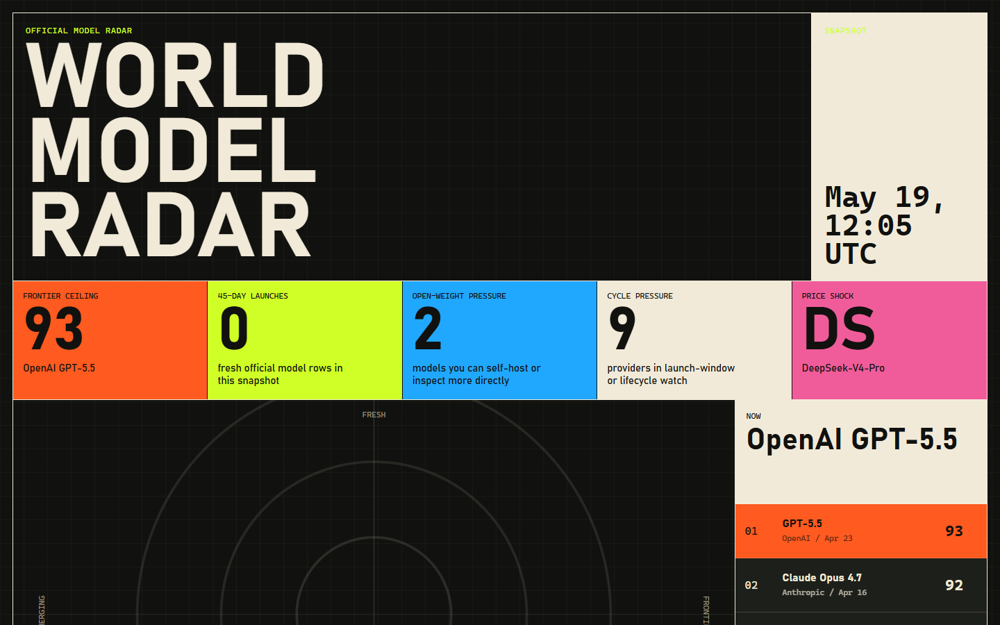
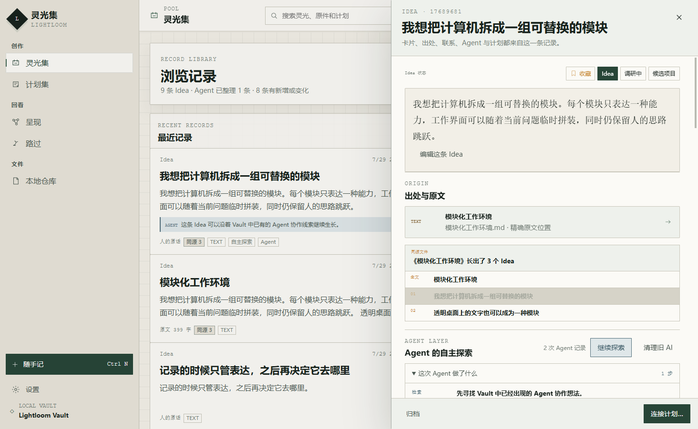
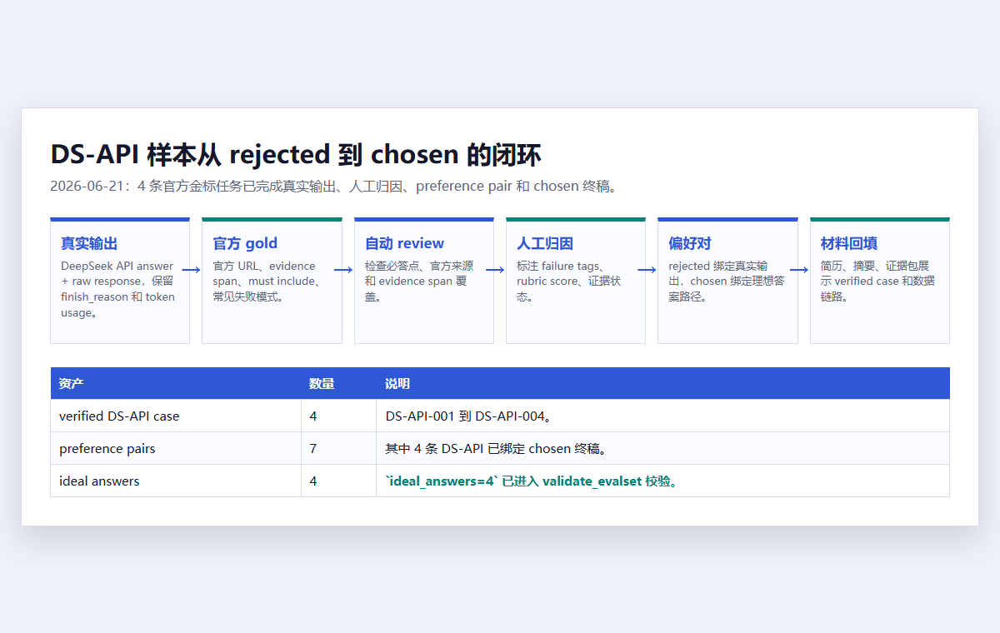

2021—2024
ZHEJIANG UNIVERSITY
先学会看信号，
再学会看体验。
生物医学工程训练我处理数据、图像和实验记录；工业设计让我开始追问操作路径、信息结构和人的感受。两套训练放在一起后，我不太满足于“功能已经跑通”。
AI 产品 · 模型评测 · 人机协作
我从生物医学工程和工业设计走进 AI：一边习惯追问事实和证据，一边在意一个工具是否顺手、是否值得信任。现在，我把这两种习惯用在模型信息、个人知识工具和回答评测上。
AVAILABLE 2026.08.11 起 · 每周 5 天 · 6 个月以上 · 上海 / 北京 / 深圳 / 杭州
01 / MY PATH
大学读生物医学工程时，我经常和信号、图像、实验记录打交道。辅修工业设计以后，我开始注意另一类问题：一个功能已经完成的工具，为什么还是会让人困惑，甚至很快被放弃。
后来我发现，自己一直在追同一个问题——技术如何进入人的真实任务，又怎样让人看见它的依据和边界。
ZHEJIANG UNIVERSITY
生物医学工程训练我处理数据、图像和实验记录；工业设计让我开始追问操作路径、信息结构和人的感受。两套训练放在一起后，我不太满足于“功能已经跑通”。
GRADUATION PROJECT
本科毕业设计里，我把饮食记录、食物识别、健康档案和 PubMed 文献问答接进微信小程序。做到健康建议时，我越来越在意回答从哪里来、哪些话可以确定、哪些边界必须说清楚。
TÜV SÜD / EVIDENCE WORK
在功能安全与认证检测工作中，我长期核对规格、测试记录、软件版本和产品照片，也整理了 196 项中英对照判断指南。这段经历把“可追溯”从方法变成了习惯。
INDEPENDENT PRODUCTS / PSYCHOLOGY
我开始独立做 Model Radar、Lightloom 和 AI 搜索回答评测。接下来，我会在清华大学心理与认知科学系 MAP 应用心理项目中继续研究：人为什么开始使用、逐渐信任，又会在什么时刻放弃一个 AI 工具。
02 / REAL PROJECTS
这里保留我当时遇到的问题、做过的关键选择和能够公开检查的产物。品牌名与技术名放在旁边，主标题直接说清楚项目解决了什么。

REAL PRODUCT SCREEN CAPTURED 2026.08 / UI SNAPSHOT 2026.05.19

REAL APP SCREEN LIGHTLOOM 0.8.5 / IDEA + ORIGIN + AGENT
LIGHTLOOM · 灵光集
我的记录散落在文字、网页、截图、文件和录音里。很多 AI 工具很快就开始总结和整理，我更希望原件始终留在手边，暂时不处理也是一种选择。
因此 Lightloom 从普通本地文件夹开始：原件先保存为可见文件，再让 Agent 围绕原文检索、联系和批注。Agent 完成探索后，过程、来源和停止理由会安静放回原位。

REAL WORKING ARTIFACT DS-API CASE / REJECTED → CHOSEN
AI 搜索回答质量评测
AI 搜索回答经常看起来完整，真正追下去却会遇到旧信息、弱来源和引用对不上结论。我把判断拆成任务完成、来源质量、时间范围、证据绑定、风险边界和表达结构。
一条真实 API 回答使用了旧模型名和过时参数，也没有提供所需的官方来源。我将它评为 3/13，逐项定位问题，再根据官方页面补齐证据并重写优选回答。
BOUNDARY 这是一个小规模、可复查的个人项目，已经跑通工作链路；它没有被包装成大规模标准评测集。
PUBMED / EVIDENCE ANSWER
PubMed + RAG 智能营养师
体重管理很难靠一次问答完成。饮食记录、食物识别、个人健康档案和建议反馈需要连在一起，模型给出的健康信息还要交代来源和风险边界。
我用微信小程序承载日常记录，用 Flask 和 SQLite 管理后端与数据，引入 PubMed 检索增强健康问答，并用不同模型能力承担通用对话与领域分析。
VISUAL NOTE 原始小程序截图暂未公开；左侧是依据毕业设计实际功能和技术链路重构的说明图。
03 / HOW I WORK
工作方法只有落到具体项目里才有意义。下面三步都能回到上面的产品、代码、样本或检查记录。
谁在什么情境下，需要完成什么任务？哪些信息必须出现，哪些风险需要提前挡住？
见 Model Radar 的问题收窄 ↗选择够用的技术，把概念推进到可以真实使用、演示和产生反馈的状态。
见 Lightloom 的本地工作流 ↗把判断写成检查口径，保留来源、状态、失败原因和修改记录，也保留暂时无法确定的缺口。
见搜索回答评测链路 ↗04 / CONTACT
我目前关注 AI 产品、模型评测与人机交互方向的实习和项目合作。邮件里可以直接告诉我：你们在做什么、现在卡在哪里、希望我参与哪一段。